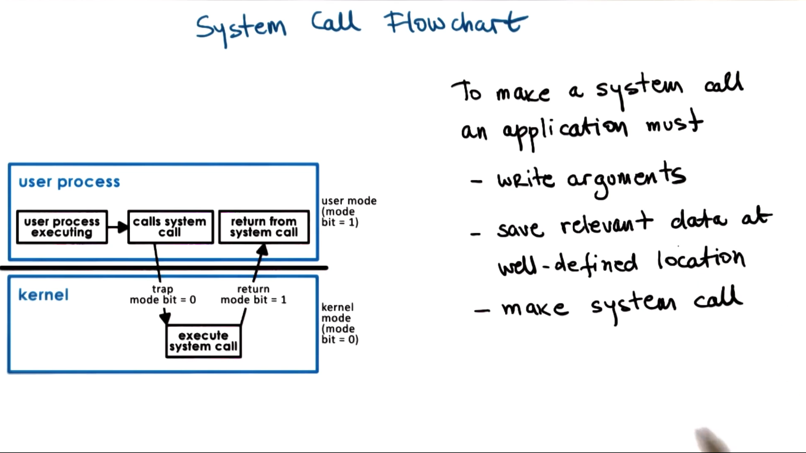
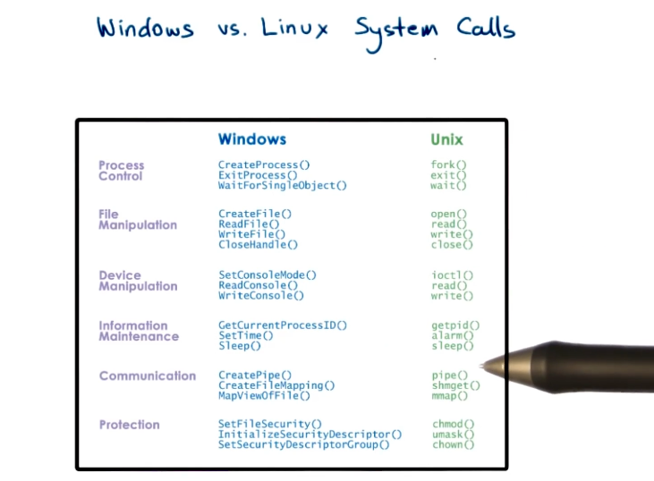
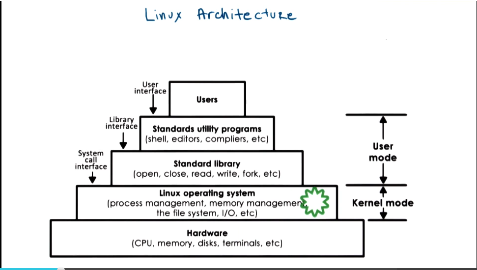
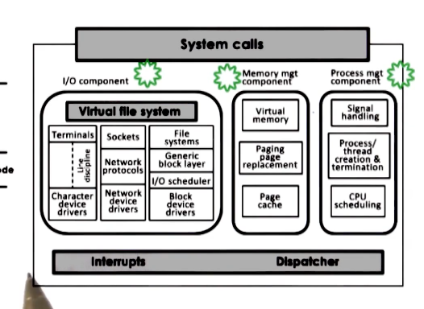
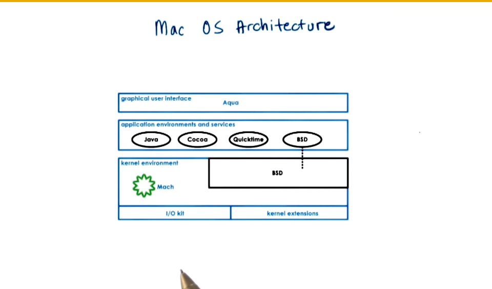

GIOS Lecture Notes - Part 1 Lesson 2 - Introduction to Operating Systems
What is an Operating System?
- A special piece of software that abstracts and arbitrates the use of a computer system
- An operating system is like a toy shop manager
- Directs operational resources
- Enforces working policies
- Mitigates difficulty of complex tasks
- Formal definition: An operating systems is a layer of systems software that:
- Directly has privileged access to the underlying hardware
- Hides hardware complexity
- Manages hardware on behalf of one or more applications according to some predefined policies
- In addition, it ensures that applications are isolated and protected fro mone another
- OS Examples:
- Desktop
- Microsoft Windows
- Unix-Based
- Max OS X (BSD)
- Linux
- Ubuntu, RHEL, etc
- This class will mostly focus on Linux
- Embedded
- OS Elements
- Abstractions
- Process, thread,
- file, socket, memory page
- Mechanisms
- Create, schedule
- open, write, allocate
- Policies
- least-recently used,
- earliest deadline first
- Memory Management Example
- Abstraction = memory page
- Mechanism = allocate, map to a process
- Policy = least-recently used
- Design Principles
- Separation of mechanism & policy
- implement flexible mechanisms to support many policies
- e.g. least-recently used and least-frequently used memory page swap algorithms require a mechanism for tracking and timing usage
- Optimize for common case
- Need to understand some questions to make correct design choices for an OS.
- where will the OS be used?
- What will the user want to execute on that machine?
- What are the workload requirements?
- User/Kernel Protection Boundary
- user-level
- applications operate in user mode
- kernel-level
- because we need direct hardware access, OS must operate in kernel mode
- crossing from user to kernel level or vice versa is supported by hardware in most modern platforms
- privilege bit in CPU. when set we can do kernel mode things
- attemps to perform privileged operations when in user mode will cause a trap. the application will be interrupted and control will be handed back to OS. OS will verify and either grant access or terminate process.
- In addition to traps, there are system calls. Applications can invoke these to request the OS to perform privileged operations on their behalf.
- e.g. open(file), send(socket), malloc(memory)
- Signals
- mechanism for OS to pass information back into applications. discussed in a later lesson
- System Call Flowchart

- Arguments for system calls can be passed directly from application to OS, or indirectly by storing in a register and passing address locations
- In synchronous mode the process will wait until the system call completes. There is also an async mode, to be discussed in a later section
- In summary User/Kernel transitions are a necessary part of running an application
- Applications may need to access certain hardware or request resources. Only OS Kernel can perform those
- Performing system call and context switches is very slow, can take hundreds of cycles. Pages out some application data to bring in necessary kernel data. Not a cheap process.

- Monolithic OS
- all services are part of the OS. e.g. file system (multiple kinds), processes, threads, etc.
- Pros
- everything included
- inlining, compile-time optimizations
- Cons
- big and unwieldy
- customization, portability, manageability
- memory footprint
- performance concerns
- Modular OS
- many services and APIs included, but everything can be added as modules. allows for reconfiguration based on needs for a given workload
- Pros
- easier to maintain and upgrade
- smaller footprint
- less resource needs
- Cons
- indirection can impact performance. jumping through module interface hoops
- maintenance can still be an issue. modularity can make synchronization hard and introduce bugs
- Microkernel
- only include most basic primitives at OS level (address space, threads). all other components run outside of OS at user level. requires lots of inter-process communication, usually supported by OS
- Pros
- very small, easer to verify and test
- Cons
- portability
- complexity of software development
- cost of user/kernel crossing
- Linux and Mac OS Architectures


